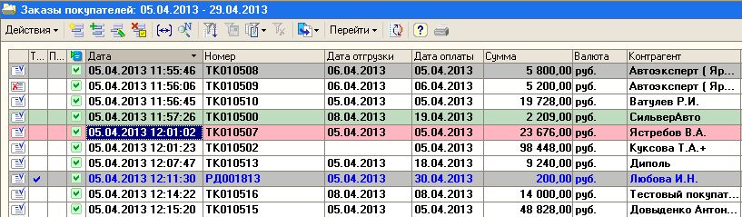
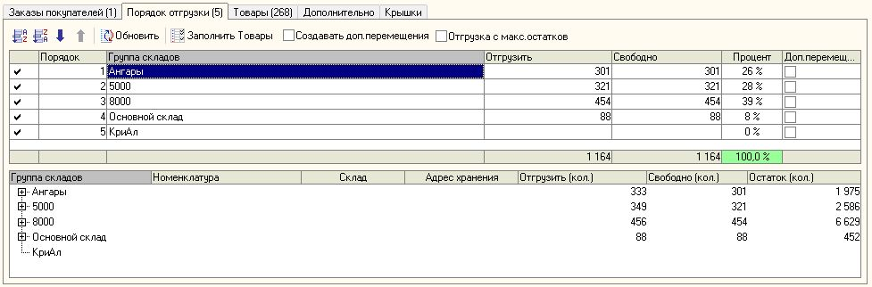
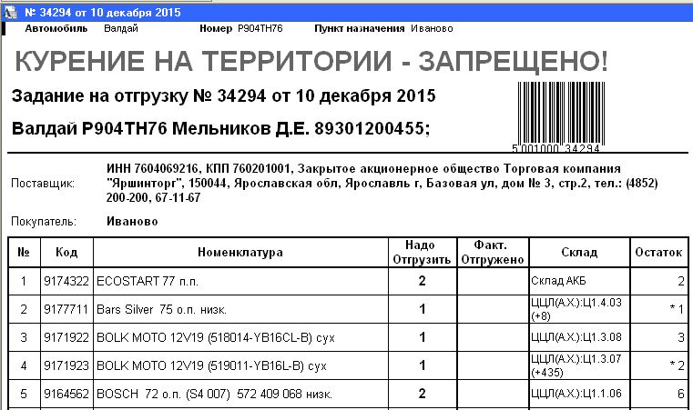
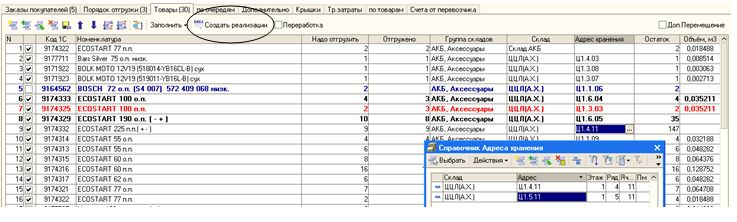

Документ предназначен для упрощения отгрузки со склада,
определения нужных складов и формирования документов
Реализации или Перемещений по выбранным складам отгрузки,
а также для учета реализаций и перемещений по водителям и машинам.
Данный документ имеет два вида операции:
* Расход - оформляются документы «Реализация товаров и услуг» или «Перемещение»
* Приход - предназначен для учета поступления товаров.
Основной первичный документ при работе с оптовыми покупателями.
На основании Заказа покупателя создаются все последующие документы:
"Задание на отгрузку", "Реализация товаров и услуг", "Перемещение", "Оплата от покупателя" и т.п.
Для оперативного анализа состояния заданий на отгрузку -
- в списке Заданий на отгрузку и в списке заказов покупателя сразу отмечается определенным цветом
то задание которое «в работе» или уже выполнено

Цвет текста - определяет наличие отгрузок по заказу:
Обычный черный текст - неотгруженные задания,
Черный текст - неотгруженные, но редактированные за последние 2 часа ,
Синий текст - есть отгрузки (реализации) по данному заданию, например РД001813
Цвет фона строки - определяет состояние заказа:
задание полностью снято например ТК010508
по заданию всё полностью отгружено например РД001813
На отгрузку 100% из того, что заказано например ТК010500
Задание будет отгружен не полностью например ТК010507 - нет на складе, проделен в минус или уже отгружается по другому заказу
По заданию будет отгружено БОЛЬШЕ, чем в заказе!
(Возможно создали 2 задания на отгрузку по одному заказу покупателя) – «лишнее» требуется скорректировать.
Краткое описание – что делает Задание на отгрузку
1. По выбранным документам "Заказ покупателя" - формируется список еще неотгруженных товаров.
2. Для этих товаров - находится свободный остаток на всех складах и предлагается порядок отгрузки ( с учетом ранее созданных заданий на отгрузку)
3. Определяются группы складов, с которых надо брать товар.
4. После выбора порядка отгрузки - требуется нажать кнопку " Товары", при этом формируется список отгрузки товаров по конкретным складам в соответствии с выбранным порядком отгрузки.
5. Кладовщики - получают задания на отгрузку, отгружают товар в соответствие со списком складов отгрузки.
6. Фактическое количество отгруженного товара - заполняется в ручную или автоматически (с терминала сбора данных)
7. Все расхождения - количества, номенклатуры или склада - вносятся вручную.
Причины "пересорта" или "недогруза" выясняются отдельно, и по возможности - устраняются. Отдельно оформляются документы «Заявка на брак» и «Рекламация».
8. После ввода фактического количества - заполняется закладка "Дополнительно", на которой вводятся данные по водителю и машине.
9. после этого создаются документы отгрузки (Реализации).
Каждый документ еще раз проверяется и проводится бухгалтером.
10. после проверки правильности всех документов – прямо из Задания на отгрузку – нажатием кнопки [Провести], [Торг12], [ТТН] - распечатываются все документы.
11. Только после всех вышеперечисленных действий Задание на отгрузку считается выполненным и ставится флаг [v] Выполнено.
Формирование остатков по группам складов
Если требуется сделать наоборот – включите [v] Отгрузка по максимальным остаткам
Нажмите кнопку [Обновить]
Сразу включаются все галки на всех складах…
Количество Надо отгрузить и Свободно - показывает Максимально-возможное
для данной группы складов (если эта группа будет первой по порядку)…

Стрелками вверх и вниз
После определения товаров – нажмите кнопку [Товары]
- сразу же будет заполнена таблица Товары для необходимого количества отгрузки по каждому складу (ячейке)
и каждому товару, сформирован резерв на отгрузку и проведен документ.
После этого можно распечатать Задание – нажмите кнопку Печать – Отгрузка по складам (товары по всем заказам – одной «кучей»)
или Печать – Отгрузка по складам (по очередям) - для разделения отгрузки по очередям.
Эти распечатки отдаются Водителю (или сразу кладовщику) на склад для отгрузки товаров в машину.

Кладовщики находят нужный товар в выбранном складе и отмечают в столбце Факт.Отгружено в бумажном виде
– что они его отгрузили, если товар фактически не найден или взят с другого склада
– кладовщик отмечает это в распечатке по заданию.
(в столбце Склад - отмечается наличие других товаров в той же ячейке склада)
По выполнению всей отгрузки – данный документ возвращается бухгалтеру (оператору) для внесения в электронный документ.
Если Все отгружено как надо – то бухгалтеру достаточно нажать в документе кнопку [Заполнить] и выбрать Отгружено столько сколько надо
При необходимости – измените только те строки, в которых есть различия (подсвечиваются разним цветом:
синим – если не отгружено,
черным – отгружено не все,
красным – отгружено больше чем надо отгрузить

При необходимости – можно выбрать другую группу складов, склад или ячейку
– в поле выбора будут показаны только те склады, где есть этот товар (в свободном остатке и с учетом резервов по другим заданиям)
После внесения всех данных по фактической отгрузке – можно формировать документы отгрузки.
Для этого достаточно на этой же закладке Товары - нажать кнопку [Создать реализации]
После этого на первой закладке «Заказы покупателей» необходимо проверить «красные» строки – это недогруз…
и если все правильно – нажать кнопку [Провести]
После проведения – можно сразу распечатать все документы – [Торг12 и Спецификации] и [ТТН]
Сразу на принтер или сначала открыть.
При необходимости распечатываются Маршрут водителю (по факт.отгрузке) и Пропуск.
После оформления всех распечатанных бумажных документов – в Задании на отгрузку
необходимо поставить флаг [v] Выполнено, после чего отгрузка считается окончательно выполненной.